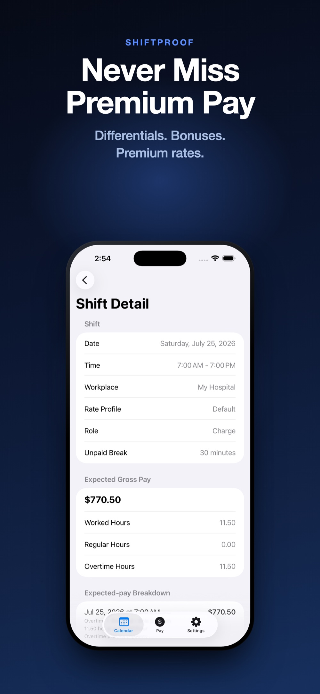

A shift differential is extra pay for working a shift that's less convenient than a standard daytime, weekday schedule — nights, weekends, and holidays being the three most common. It's added on top of your base hourly rate, shift by shift, rather than being a flat bonus.
Differentials are usually expressed as a flat dollar amount added per hour (for example, an extra $3.00/hr for nights), though some employers use a percentage of the base rate instead. Either way, the important thing for checking your pay is knowing which method your employer uses and what the rate actually is.
There is no federal law that requires night, weekend, or holiday differential pay at all — it's a policy choice made by each employer, sometimes negotiated into a union contract. That's why the hours that count as "night," the days that count as "weekend," and the dollar amount added all vary so much from one employer to the next. The only way to know your actual rates is your employee handbook, offer letter, or payroll department — not a general rule.
A differential applies to the hours within the qualifying window, not to the whole shift automatically. A shift that starts at 3 p.m. and ends at 11 p.m., for example, might only have its last few hours fall inside a 7 p.m.–7 a.m. night window — so only those hours pick up the differential, while the earlier hours are paid at the base rate.
Differentials can also stack. A holiday that falls on a Saturday might qualify for both the weekend and holiday differential, depending on employer policy — worth confirming rather than assuming either way.
Differential pay is ordinary earned income for the hours it applies to, and it's generally factored into your effective rate before an overtime multiplier is applied — not carved out separately. That's one reason a shift with a differential, worked during overtime hours, can be worth noticeably more than the base rate times the overtime multiplier alone. The exact method depends on your employer's payroll system; if you're checking the math yourself, confirm which order they apply it in.
When a differential-eligible shift doesn't add up the way you expected, the most common causes are: the shift was logged without the differential code, the shift's start or end time didn't actually fall inside the qualifying window, or the differential rate itself was misremembered. Confirming the exact hours and rate with your employer or payroll department is the fastest way to resolve the gap.

ShiftProof lets you set night, weekend, and holiday differentials once per workplace, along with the hours that define each window. Every shift you add is checked against those windows automatically, and the differential is folded into that shift's expected gross pay — so it's never a manual step you have to remember to apply.
Set your differentials once. Never recalculate a night shift by hand again.
Download ShiftProof FreeThis guide is general information, not legal, tax, or payroll advice. Differential policies vary by employer and are sometimes set by a union contract — verify specifics with your employer or payroll department.